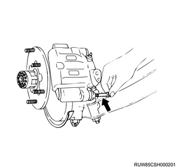
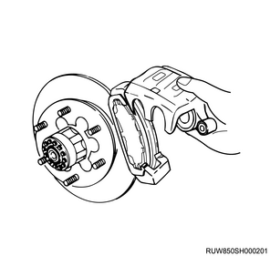

Disc brake pad removal (All models)
1. Disc wheel removal
1. Remove the disc wheel from vehicle.
2. Disc brake pad removal
Note
- Both the front disc brake pad and rear disc brake pad can be removed using the same procedure.
1. Remove the lock bolt from the brake caliper assembly.
Caution
- When replacing the disc brake pad, do not remove the brake hose from the caliper.

Note
- Turn the brake caliper facing upward.
- Remove the brake caliper from the brake support and hold it up toward the upper link or the frame.
Caution
- While the caliper is removed from the brake support, never depress the brake pedal to avoid the piston abruptly bouncing out.

2. Remove the disc brake pad from the brake support.
Note
- Remove it with the shim attached.
- Put an alignment mark in the pad position as a guide for installation.
3. Remove the clip from the brake support.
Note
- Dispose of the used pad clip and use a new one.
- Front disc brake pad
- Pad clip
- Inner pad
- Stainless steel shim
- Indicator
- Outer pad
- Rubber coated shim
Note
- Rear disc brake pad

- Pad clip
- Inner pad
- Seven layered shim
- Indicator
- Outer pad
Note
- Completely remove old grease remaining between the clip and brake support.
3. Disc brake pad inspection
1. Inspect the disc brake pad.
Note
- Measure the thickness of the disc brake pad.
Standard： 10.0 mm { 0.394 in } Front disc brake
Limit： 1.5 mm { 0.059 in } Front disc brake
Standard： 10.0 mm { 0.394 in } Rear disc brake
Limit： 1.5 mm { 0.059 in } Rear disc brake

Note
- When the pad wear indicator makes a scratching sound or is worn to within 1.8 mm {0.071 in} of the shoe table, replace the pad.
Caution
- When replacing, replace all 4 pads (inner and outer pads of both the left and right wheels).
4. Guide pin inspection
1. Inspect the guide pin.
2. Inspect the lock pin.
Note
- Inspect it for sticking, worn, bending, degradation, corrosion, abrasion, scratches, or other abnormalities.
- If there are abnormalities, make repairs or replace the parts.

- Support bracket
- Slide pin boot
- Slide pin (guide pin)
- Lock bolt
- Pad clip
- Slide pin (lock pin)